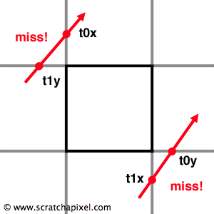

6/3/2022
SVO Ray Tracer Update #1
Screenshot of the application thus far

Dependencies
I decided to use SDL2 for window management and input. This means I don’t have to interface with windows APIs and basically skip right to rendering things.For the rendering backend I decided to go with DX11. I considered using OpenGL, but DX is the native windows API, so it seemed like the natural choice. DX12 was also a possibility, however the bulk of my code is happening inside a pixel shader running on a full-screen quad. This is something I could easily achieve using DX11 and the increased flexibility of DX12 would serve little value (it would likely just amount to more boiler plate).
I’m using GLM for my math library. It offers lots of functionality and I’m already familiar with it, so it’s the obvious choice.
Lastly, I’m using Dear ImGui for debug windows. The library has backends for a variety of project stacks, including ones using DX11 and SDL2 together. Additionally, Dear ImGui is an immediate mode user interface. This means the interface is re-rendered every frame even if nothing has changed. While this may be slower than the typical retained mode UI, it’s intuitive to work with and easy to integrate in the context of a real time graphics application. Another simplifying consequence of this is it doesn’t require any asynchronous calls or decoupling input/rendering. Input detection is done inside the same function that initiates rendering since both happen every frame. The function returns true if input has caused a state change to the corresponding UI element and false otherwise.
After adding the DX11/SDL2 Dear ImGui backend to my project, I was easily able to bootstrap the library by referencing an example project on the library’s GitHub page.
Getting Started
After integrating my dependencies, I was ready to start writing code. I wrote typical DX11 boiler plate code to create my swap chain, device, and device context. After this, I created a vertex buffer to hold six vertices corresponding to a full screen quad (three vertices for each triangle in the quad).A very (very) basic vertex shader was needed to transfer the vertex positions to the pixel shader. It doesn’t transform the vertex position at all, it just passes it along to the pixel shader.
struct VertOut
{
float4 pos : SV_POSITION;
}
VertOut vertexMain(float4 position : POSITION)
{
VertOut o;
o.pos = position;
return o;
}
Additionally, I also needed a pixel shader. I started by just outputting red to the screen. This allowed me to debug my full screen quad and vertex buffer quickly. Once the screen was completely red, I moved on to writing the pixel shader.
All of the voxel ray tracing and rendering is going to be done inside this pixel shader. Debugging and positioning the camera in GPU applications can be tricky (and annoying) so I wanted to start with something I was familiar with: a sphere ray marcher. I’ve written tens of ray marchers, so I was able to get this up and running without a head ache. This allowed me to ensure my camera and object positions were correct.
After completing this, I moved on to writing the box ray tracer.
Ray Tracing a Box
Scratchapixel has an excellent post on ray-box intersection that I followed in order to implement box ray tracing. That post can be found here.The basic idea is to find the intersection points of the ray and the planes corresponding to the box’s minimum and maximum extents. You can then determine if these points are on the box by analyzing the order in which they hit. For example, as displayed by the image below, if you hit the minimum X after you hit the maximum Y, you must have missed the box.

One unintuitive bit of this is that it swaps the minimum and maximum T values depending on which occurs first. I think about this as adjusting for the view of the camera. For example, if we're located on the +X side of the cube and looking down -X, the minimum T will actually corresponding to the +X plane, not the -X plane.
Most of my code is the same as Scratchapixel’s, but I did add some additional logic to return the color corresponding to the intersected plane. Red for either X plane, green for either Y plane, and blue for either Z plane. Grey is returned if the ray misses the box.
Camera Controls and Debug Stats
Since I already had camera position programmed into the shader, I decided to create a constant buffer I could pass to the pixel shader containing the camera position. This allows me to drive the camera position from the CPU. Using Dear ImGui, I created a debug window with sliders to modify the camera X, Y, and Z positions.Lastly, I added FPS and frame time information to the debug window. I use the chrono library to get time stamps before and after the frame, then subtract these to get frame time in milliseconds. This time is then used to calculate the FPS.